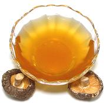

|
Mushroom Dashima StockKorea - Bausut Dashima Gukmul | ||||
| Makes: Effort: Sched: DoAhead: |
6 cups * 50 min Yes |
This is a vegetarian stock that can be used in place of Anchovy Stock for otherwise vegetarian dishes. Naturally, it doesn't taste the same, but it's a good stock, compatible with most recipes, and some may prefer it. | |||
|
|
8 96 7 9 |
in2 oz c |
Black Mushroom (1) Kelp (2) Daikon Radish Water |
Make - (50 min - 12 min work)
|